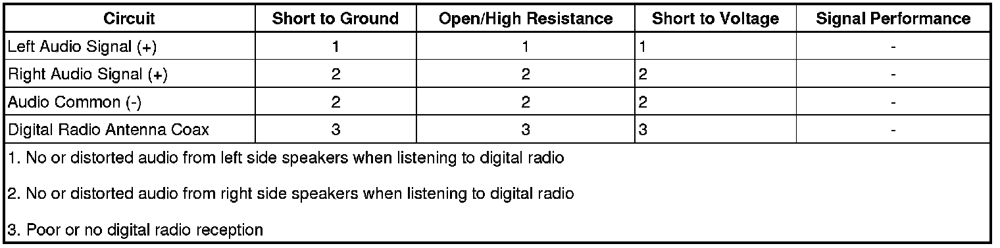

B1259
DTC B1259
Diagnostic Instructions
* Perform the Diagnostic System Check - Vehicle (Initial Inspection and Diagnostic Overview) prior to using this diagnostic procedure.
* Review Strategy Based Diagnosis (Initial Inspection and Diagnostic Overview) for an overview of the diagnostic approach.
* Diagnostic Procedure Instructions (Initial Inspection and Diagnostic Overview) provides an overview of each diagnostic category.
DTC Descriptors
DTC B1259 02
- Antenna Ground Circuit Short to Ground
DTC B1259 05
- Antenna Ground Circuit Short to Battery or Open
Diagnostic Fault Information

Circuit/System Description
The digital radio receiver (DRR) receives digital radio information from a specific digital radio antenna located on the outside of the vehicle. The DRR is connected to the digital radio antenna via a shielded coaxial cable. The antenna cable also provides a path for DC current for powering the antenna.
Conditions for Running the DTC
* Radio ON.
* Battery voltage must be between 9-16 volts.
Conditions for Setting the DTC
B1259 02
The DTC will set when the DRR detects a short to ground in the antenna ground circuit.
B1259 05
The DTC will set when the DRR detects a short to voltage or an open/high resistance in the antenna ground circuit.
Actions Taken When the DTC Sets
* Digital radio reception may be poor or not available.
* The radio displays "No XM Signal" or "Check Antenna".
Conditions for Clearing the DTC
* The condition responsible for setting the DTC no longer exists.
* A history DTC will clear once 100 consecutive malfunction-free ignition cycles have occurred.
Reference Information
Schematic Reference
Radio/Navigation System Schematics (Radio/Navigation System Schematics)
Connector End View Reference
Component Connector End Views (Connector Views)
Description and Operation
Radio/Audio System Description and Operation (Radio/Audio System Description and Operation)
Electrical Information Reference
* Circuit Testing (Component Tests and General Diagnostics)
* Connector Repairs (Component Tests and General Diagnostics)
* Testing for Intermittent Conditions and Poor Connections (Component Tests and General Diagnostics)
* Wiring Repairs (Component Tests and General Diagnostics)
Scan Tool Reference
Control Module References (Programming and Relearning) for scan tool information
Special Tools
EL-48028 Digital Radio Test Antenna
Circuit/System Testing
Important:
* Ensure the vehicle is outside in an area with an unobstructed view of the southern sky. Turn XM radio ON. Tune the radio to satellite channel 1. XM reception should be clear.
* Contact XM radio services to v-800y the customers account status or possible network problems.
1. Ignition OFF, disconnect the antenna coax from the DRR. Connect the EL-48028 to the DRR.
2. Ignition ON, radio tuned to XM, verify XM reception has improved.
• If the XM reception has not improved, replace the DRR.
3. Ignition OFF, disconnect the antenna coaxial cable from the DRR antenna base.
4. Ignition ON, test for less than 1 volt between the antenna coax center terminal and ground.
• If greater than the specified range, replace the antenna coax.
5. Test for infinite resistance between the antenna coax center terminal and ground.
• If less than the specified value, replace the antenna coax.
6. Test for less than 5 ohms of resistance between the two ends of the coax cable center conductor.
• If greater than the specified range, replace the antenna coax cable.
7. Test for less than 5 ohms of resistance between the two ends of the coax cable outer shield.
• If greater than the specified range, replace the antenna coax able.
8. Test for infinite resistance between the antenna coax center conductor and the outer shield.
• If less than the specified range, replace the antenna coax cable.
9. If all circuits test normal, replace the digital radio antenna.
Repair Instructions
Perform the Diagnostic Repair Verification (Verification Tests) after completing the diagnostic procedure.
* Digital Radio Antenna Cable Replacement (Service and Repair)
* Cellular Communications/Digital Radio Antenna Replacement (Cellular Communications/Digital Radio Antenna Replacement)
* Control Module References (Programming and Relearning) for DRR replacement, setup, and programming